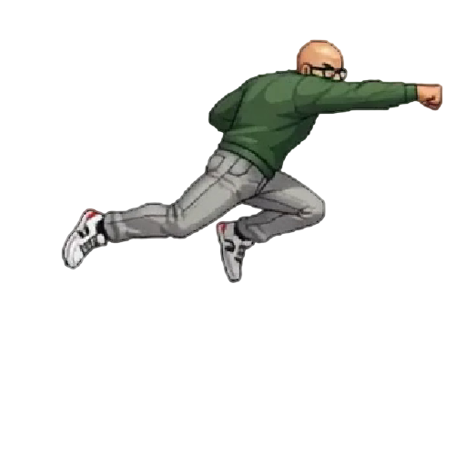
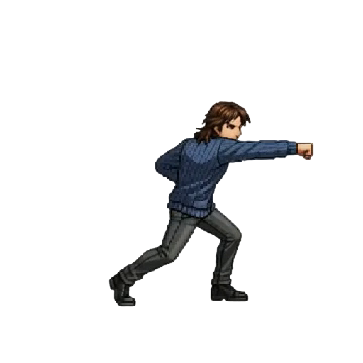
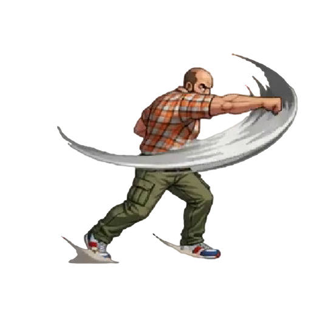
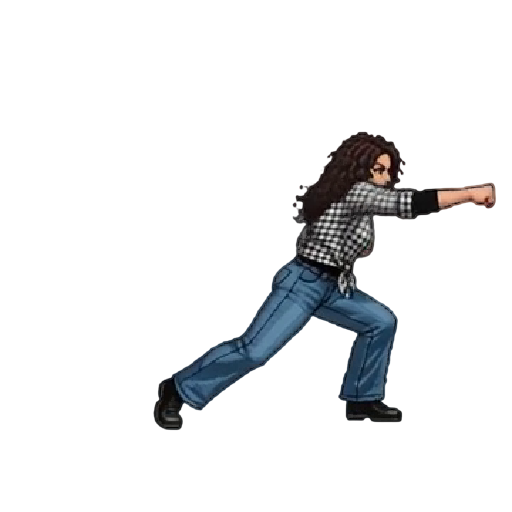
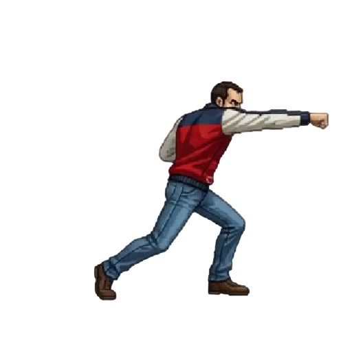
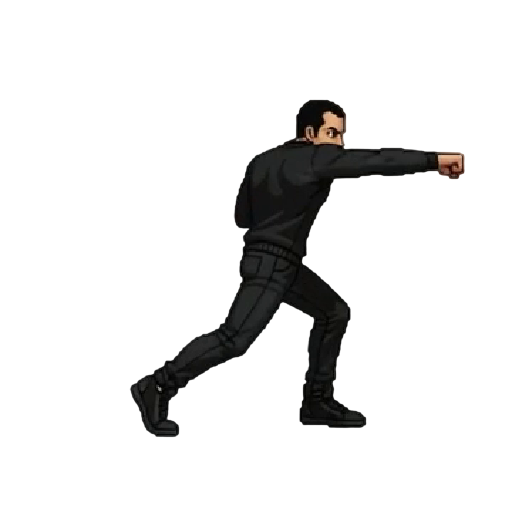
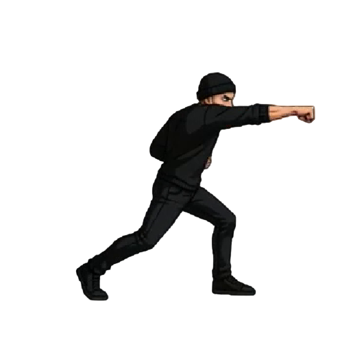
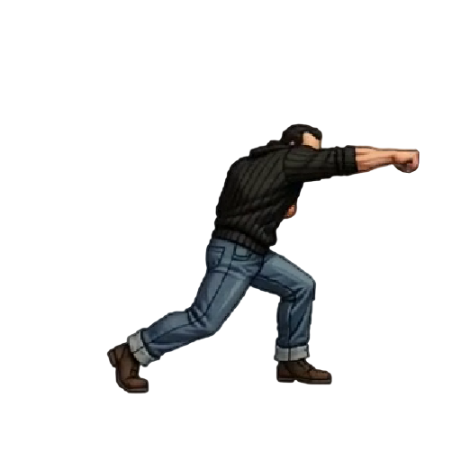
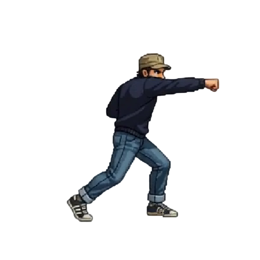

Apri Pugno forte nella demoTiming Pugno forte
Aggiornamento: 2026-11-19. Integrati 9 personaggi su 48. A velocita 1x il frame scelto di impatto principale inizia esattamente a 500 ms (0,50 s); il ciclo completo termina a 1000 ms (1,00 s). La fase successiva all'impatto dura 500 ms (0,50 s).
Tutti i nove personaggi integrati usano la sequenza sorgente solo avanti, che include preparazione, colpo e recupero naturale. I PNG scaricati da AutoSprite e il padding delle celle 512x512 sono conservati byte per byte, senza ridimensionamenti o ricentrature.
Le durate variabili per frame sono incorporate nel catalogo offline e negli atlas come riferimento per Godot. Gli fps medi non descrivono le due fasi: la tabella indica i millisecondi effettivi di ogni passo prima e dopo l'impatto. Le maschere del braccio per scia e particelle azzurre (intensita 75%) sono mantenute manualmente in strong-punch-trails.json.
Personaggi senza Pugno forte importato (39): ALEX, ANGELA, ANTONINO, BARBARA-FIOCCA, Bonazzi, Chiara-Molina, CHIARA-TONIOL, CONDELLO, DINO, EMMA, EROS, FARA, FRA-AMATO, FRANCESCA-RIVELLA, FRANCESCO-LEONI, GENNARO, Giordano, GIORGIO, JERRY, LIVIO, LUANA, MANU, MARCO-BALPO, Marco-Rossetti, MARIO, MARTINI, MATTEO, MIKE, MORI, PEIROLO, Simona, TOMMASO, ZICHELLA, Franco, Tamara, Patrick, Luca-Arcangeli, Cristian-Canino, Alessandro-Mantelli.
Scarica il report CSV · Timing JSON · Manifest e provenienza · Trails JSON
| Personaggio | Posa scelta | Frame sorgente / riprodotti | Riproduzione | Frame impatto | Impatto | Fase successiva | Ciclo | Durata passo prima / dopo | Note | Asset |
|---|
| ALBERTO |  | 64 / 64 | Solo avanti | 17 / 64
sorgente 16 | 500 ms | 500 ms | 1000 ms | 31.250 / 10.417 ms | First fully extended airborne punch; forward playback preserves takeoff, landing, recovery and the complete saved sheet. | Atlas e sequenza
cmwm1wpy600ri50ya8y41drko |
|---|
| Elisa |  | 64 / 64 | Solo avanti | 32 / 64
sorgente 31 | 500 ms | 500 ms | 1000 ms | 16.129 / 15.152 ms | First clean fully extended punch at source frame 31. Original white arc preserved; forward sequence includes natural recovery. | Atlas e sequenza
cmwm8h1fq004l8i6dkuprcwwl |
|---|
| FABIO-CLARA |  | 64 / 64 | Solo avanti | 21 / 64
sorgente 20 | 500 ms | 500 ms | 1000 ms | 25.000 / 11.364 ms | First fully extended punch at source frame 20; original white arc and dust preserved. Forward sequence includes natural recovery. | Atlas e sequenza
cmwm7f5y800lm2lad4ut5lo39 |
|---|
| FRA-TAVARONE |  | 55 / 55 | Solo avanti | 22 / 55
sorgente 21 | 500 ms | 500 ms | 1000 ms | 23.810 / 14.706 ms | Fully extended main punch at source frame 21. Saved 55-frame revision; forward playback includes preparation and natural recovery. | Atlas e sequenza
cmwnep71x00l629xvtrflrgeh |
|---|
| MARSAN |  | 64 / 64 | Solo avanti | 34 / 64
sorgente 33 | 500 ms | 500 ms | 1000 ms | 15.152 / 16.129 ms | Restored Strong punch 2: first clean fully extended punch after the built-in white streak (frame 33). Forward playback includes natural recovery. | Atlas e sequenza
cmwm7xx0q004sxy4f0i49habb |
|---|
| Oscar |  | 52 / 52 | Solo avanti | 26 / 52
sorgente 25 | 500 ms | 500 ms | 1000 ms | 20.000 / 18.519 ms | First clean extended punch after the source motion smear; forward playback includes held extension and natural recovery. | Atlas e sequenza
cmwlyx95n00b6rt6m37u8h9ol |
|---|
| PEPPO |  | 64 / 64 | Solo avanti | 31 / 64
sorgente 30 | 500 ms | 500 ms | 1000 ms | 16.667 / 14.706 ms | Stable fully extended punch at frame 30; forward playback preserves wind-up, extended pose and natural recovery. | Atlas e sequenza
cmwm8bmns003o8i6dnfx7ghzz |
|---|
| Pippo |  | 40 / 40 | Solo avanti | 21 / 40
sorgente 20 | 500 ms | 500 ms | 1000 ms | 25.000 / 25.000 ms | Overhand punch, forward playback includes recovery. Source has its own white streak and impact flash, preserved unchanged. | Atlas e sequenza
cmwly4b61000b9vuz7nktixhl |
|---|
| SBOZ |  | 64 / 64 | Solo avanti | 23 / 64
sorgente 22 | 500 ms | 500 ms | 1000 ms | 22.727 / 11.905 ms | Main punch extension at frame 22; source includes an earlier short punch, preserved unchanged. Forward playback includes natural recovery. | Atlas e sequenza
cmwndk8i1000l13taeyf08o7n |
|---|